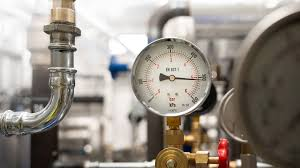

Vi har lång erfarenhet av professionell VVS-service och arbetar alltid med kvalitet i fokus.
Rörmockarfirman AB startades 2010 med målet att erbjuda pålitliga och professionella VVS-lösningar till både privatpersoner och företag. Vi strävar alltid efter nöjda kunder och hög kvalitet i varje projekt.
